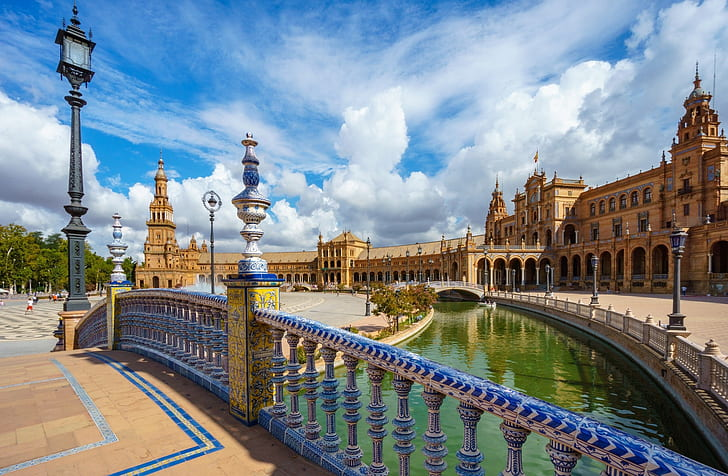
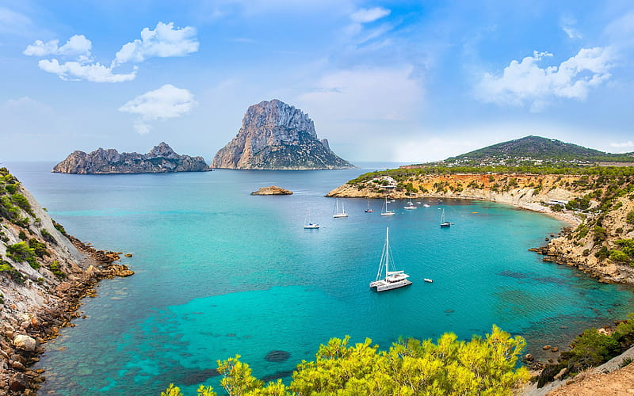
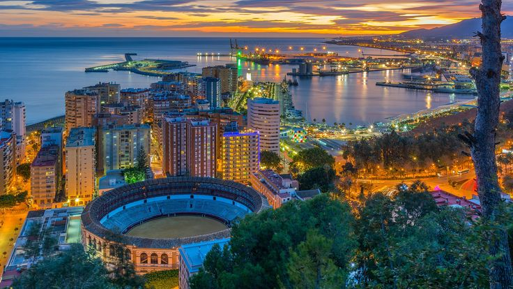
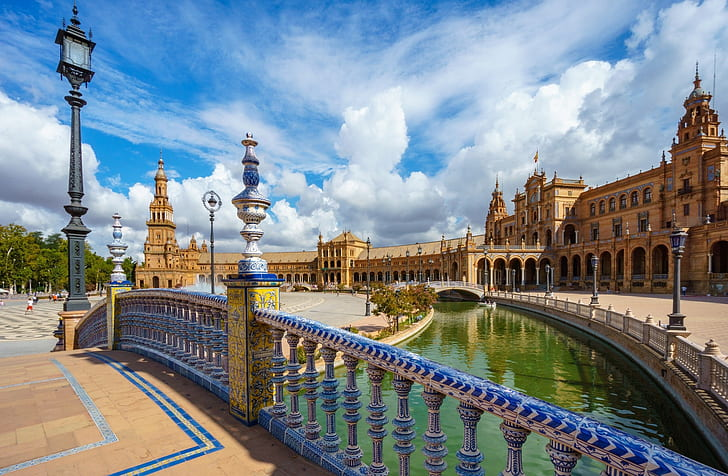
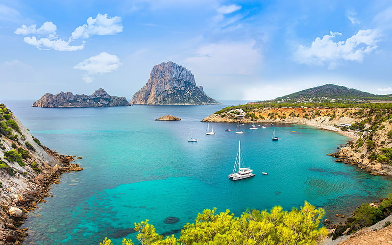
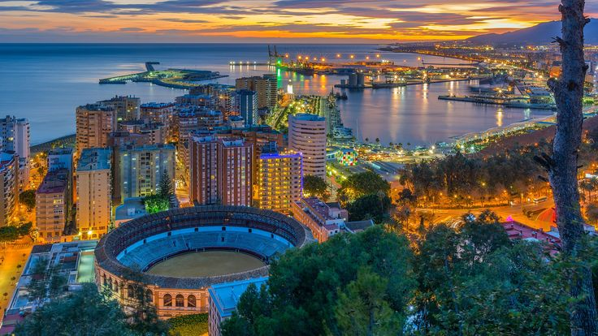

Location:Spain is located on the Iberian Peninsula in southwestern Europe, bordered by France, Andorra, Portugal, and the Mediterranean Sea. It also includes the Balearic Islands in the Mediterranean and the Canary Islands in the Atlantic Ocean off the northwest coast of Africa.
Population:As of my last update in January 2022, Spain's population was around 47 million people. It is the sixth most populous country in Europe.
Languages:Spanish, also known as Castilian, is the official language of Spain. It is spoken by the vast majority of the population. There are also several co-official regional languages, including Catalan, Galician, and Basque.
Culture:Spain has a rich cultural heritage influenced by its history of Roman, Moorish, and Christian civilizations. It is famous for its art, literature, music, cuisine, and festivals. Flamenco music and dance, bullfighting, and La Tomatina festival are some of the cultural highlights.
Economy:Spain has a mixed capitalist economy and is one of the world's largest tourist destinations, known for its rich cultural heritage, historical sites, and beautiful beaches. Key industries include tourism, manufacturing, agriculture, and services.
Tourist Attactions:Spain is one of the world's top tourist destinations, attracting millions of visitors each year. Popular tourist destinations include cities like Barcelona, Madrid, Seville, and Valencia, as well as coastal regions like the Costa del Sol and the Balearic Islands.
Cuisine:Spanish cuisine is celebrated worldwide for its rich and diverse flavors, reflecting the country's cultural history and regional diversity. From the seafood-rich coastal regions to the hearty meats and stews of the interior, Spanish cuisine offers something for every palate. Iconic dishes like paella, made with saffron-infused rice and a variety of meats or seafood, are enjoyed across the country. Tapas, small plates of flavorful appetizers or snacks, are a beloved part of Spanish culinary tradition, allowing diners to sample a variety of dishes in one sitting. Olive oil, garlic, and fresh herbs are fundamental ingredients in many Spanish recipes, adding depth and complexity to dishes. Whether indulging in traditional favorites like gazpacho or exploring innovative culinary creations in Michelin-starred restaurants, dining in Spain is an unforgettable experience for food lovers.
Trasportation:Spain offers a well-developed transportation network that makes traveling within the country efficient and convenient. The country's extensive rail system, operated by Renfe, includes high-speed trains such as the AVE (Alta Velocidad Española), which connect major cities like Madrid, Barcelona, Seville, and Valencia with speeds of up to 300 km/h (186 mph). Regional trains and commuter services provide connectivity to smaller towns and rural areas. In addition to trains, Spain has an extensive network of highways and expressways, allowing for easy road travel between cities and regions. Major cities like Madrid and Barcelona also have efficient public transportation systems, including metros, buses, and trams, making it easy for visitors to navigate urban areas without a car. For air travel, Spain is served by several international airports, including Madrid-Barajas Airport and Barcelona-El Prat Airport, which offer domestic and international flights to destinations around the world. Whether traveling by train, car, or plane, Spain's transportation infrastructure ensures that visitors can explore the country with ease.
 




